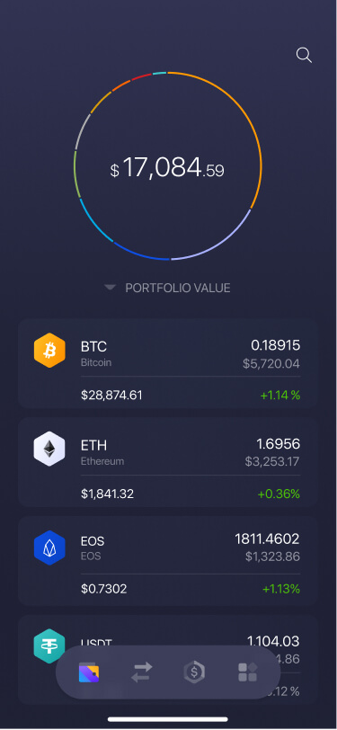
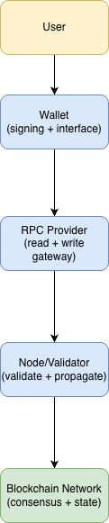
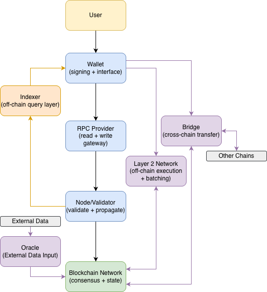

Section IX: Applications and Synthesis · Lesson 01-AS
Blockchain in the Real World
From Theory to Reality
We’ve studied how blockchain works—and how it’s abused. But how do real people actually use it?
- From diagrams → to real systems
- From cryptography → to applications
- From theory → to user experience
What Does a User Actually Interact With?
- Users do not interact with blockchains directly
- They interact with:
- Wallet applications
- Web interfaces (dApps)
- Exchanges and platforms
- Blockchain is abstracted away

Walking a Transaction Step-by-Step
- User initiates an action (send or swap)
- Wallet creates and signs the transaction
- RPC provider broadcasts it to the network
- RPC = Remote Procedure Call, the network interface wallets and apps use to talk to blockchain nodes
- Node validates and propagates
- Blockchain records the transaction

Wallets: The Control Layer
- Wallets manage private keys, which control assets
- They sign transactions on behalf of the user
- Wallets now come in many forms:
- browser extensions, mobile apps, hardware devices
- exchange-linked wallets with extra services

Browser/mobile wallet focused on signing, swapping, and dApp access.
Hardware wallet focused on isolating keys from the internet-facing device.
Custody Models
- Custodial
- Platform holds keys
- Easier to use
- Account recovery possible
- Examples:
- Coinbase
- Kraken
- Robinhood
- Self-Custody
- User holds keys
- Full control
- No recovery if lost
- Examples:
- MetaMask
- Ledger
Self-Custody does not imply easier or safer control.
What Users Actually Do
Send Funds
Initiate a wallet-to-wallet transfer of value.
Mint or Trade NFTs
Create or exchange unique digital items.
Swap Assets
Trade tokens through smart contracts.
Bridge Across Networks
Move assets between chains or execution layers.
- Users see apps and wallets
- But systems rely on hidden infrastructure
- Multiple components work together behind the scenes
- Each adds functionality, dependencies, and tradeoffs
RPC Providers: The Access Layer
Nodes and Validators
- Nodes maintain the ledger, mempool, and current network state
- Full nodes independently verify blocks and transactions
- Validators (or miners) order transactions and produce new blocks
- Consensus rules determine which chain becomes the accepted state
The Full Blockchain System

The diagram shows system relationships; communication paths differ by implementation.
Oracles: Connecting to the Real World
- Virtual machines are deterministic and cannot query the web directly
- Oracles publish external data on-chain for smart contracts to read
- Common inputs: prices, reserves, outcomes, and timestamps
- Oracle design determines who reports, how often, and how disputes are handled
Typical Oracle Flow
- Data is gathered from external APIs, exchanges, or reporters
- Oracle nodes validate or aggregate the observations
- A signed answer is posted on-chain
- Smart contracts read that value during execution
Failure Modes
Bad data, delayed updates, or manipulated reporting can trigger incorrect contract behavior.
Example: Chainlink Data Feeds
Indexing: Making Blockchain Usable
- Raw blockchain state is optimized for verification, not rich queries
- Indexers scan blocks, transactions, logs, and contract events
- They build queryable databases for front ends, dashboards, and analytics
- Example outputs: wallet history, token balances, DEX trades, NFT activity
Indexing Pipeline
- Watch new blocks and contract events
- Parse the fields the app cares about
- Store them in searchable tables or entities
- Serve fast application queries
Why Apps Need It
Without indexing, an app would repeatedly scan raw chain data just to answer simple interface questions.
Example: The Graph
Bridges: Linking Separate Chains
- Blockchains do not natively share assets or state
- Bridges move assets or messages between separate networks
- Often work by locking an asset on one chain and issuing a linked version on another
- Expand usability across ecosystems, but add major trust and security risks
- Example: Wormhole
A locking flow:
- Send the original token to a bridge contract on Chain A
- The bridge contract escrows it so it cannot be spent again there
- Bridge validators or relayers verify the lock event
- A wrapped or linked token is minted or released on Chain B
Scaling and Interoperability
- Layer 2 networks execute many user transactions away from the base layer
- They batch transactions together and post compressed data back to Layer 1
- Some designs use fraud proofs or validity proofs so Layer 1 can verify the result
- Interoperability expands what users can do across networks, but adds cross-system dependencies
A typical Layer 2 flow
Users submit transactions to the Layer 2. A sequencer orders them, updates the Layer 2 state, and periodically posts a batch summary plus data or proofs to Layer 1, where final settlement or dispute resolution occurs.
Where Does Blockchain Show Up?
- We now understand the system architecture
- The same components can support very different deployments
- Blockchain is often used to address one or more of these conditions:
- Multiple parties must coordinate
- Auditability is required
- Trust is limited or no single operator should dominate
- Not every blockchain deployment emphasizes all three equally
Finance (High-Level Overview)
- Decentralized finance (DeFi)
- Stablecoin payments and settlement
- Tokenized assets (real-world and digital)
- Global, programmable transactions
Market Churn and Complexity
CoinMarketCap’s cryptocurrency count page showed about 46.86 million cryptocurrencies tracked on March 23, 2026. At that scale, discovery, due diligence, liquidity, and risk assessment become dramatically harder, and the market experiences constant churn as new tokens appear faster than most users can evaluate them.
Supply Chain Case
- Multiple parties share a common ledger
- Each step records product data (origin, handling, location)
- Data is visible across trusted organizations
- Shared records make it easier to trace where contamination or handling problems entered the chain
Example: IBM Food Trust
IBM’s Colli del Garda case study describes a food traceability deployment in which product history, handling events, and distribution records were surfaced to both staff and consumers through an IBM Food Trust-backed system.
Identity Case: Verifiable Credentials
- Three roles:
- Issuer (creates credential)
- Holder (stores it)
- Verifier (checks it)
- Credentials are cryptographically signed
- Validators are run by participating public institutions
Example: EBSI Academic Credentials
The European Commission’s EBSI verifiable-credentials success stories describe a cross-border pilot launched in July 2021 involving 2 university alliances and 11 universities in 11 countries. Students can hold signed credentials in wallets and present them to verifiers without each institution manually re-checking records through a central database.
Prediction Markets Case: Polymarket
- Users trade YES / NO shares on real-world events
- Markets use USDC, a dollar-pegged stablecoin, on Polygon for collateral and settlement
- Wallet signatures authorize trades, while smart contracts track positions and payouts
- Final resolution still depends on market rules, oracle inputs, and dispute handling
- The result is transparent and portable, but still exposed to speculation, regulation, and contested outcomes
Policy trouble still matters
Polymarket’s blockchain design does not remove legal oversight. The CFTC’s January 3, 2022 enforcement order shows that even when markets run with wallets, smart contracts, and on-chain settlement, prediction products can still face regulatory action. CFTC Order
Infrastructure as a Use Case
- Blockchain networks provide services, not just transactions, such as Chainlink for data and Filecoin / IPFS for storage
- Multiple independent providers coordinate through protocols
- These services reduce reliance on one company, but still depend on incentives, availability, and data quality
Example: Chainlink Feeds in Lending
Chainlink’s Data Feeds page highlights lending protocols such as Aave as users of decentralized price feeds. In practice, the oracle network is the product: applications depend on it to price collateral, trigger liquidations, and reduce the risk of acting on stale or manipulated market data.
Complications and Risks
- Fraud: phishing, malicious contracts, and rug pulls
- Regulation: unclear rules and different approaches across countries
- Usability: key management and irreversible mistakes
- Fragmentation: too many networks, standards, and wrapped versions of assets
What the reports show
A report on The crypto ecosystem: key elements and risks argues that congestion, high fees, fragmentation, and de-facto centralization can undermine the system’s promised efficiency and resilience. The FBI’s Operation Level Up and the FTC’s guidance on cryptocurrency scams show the user-facing result: scams, theft, and costly mistakes remain common even when the technology itself is sophisticated.
Fraud and Scams
- Phishing attacks and fake websites
- Malicious smart contracts
- Rug pulls (developers drain liquidity after attracting buyers)
- Irreversible transactions increase impact
Example: HAWK Memecoin Collapse
CoinDesk reported on December 10, 2024 that Haliey Welch’s HAWK token had lost more than 95% of its value shortly after launch. After a rapid spike in market value, the token crashed within hours and left many buyers with steep losses.
Regulation and Uncertainty
- Laws and regulations are still evolving
- Different countries take different approaches
- Unclear classification of assets (security, commodity, etc.)
- Regulatory actions can impact markets and platforms
Example: Russia Sanctions and Account Disruption
CoinDesk reported on October 14, 2022 that, after EU sanctions tightened in response to Russia’s invasion of Ukraine, LocalBitcoins, Crypto.com, and Blockchain.com began discontinuing services for Russian users. Some users were told to withdraw funds before their accounts were closed, showing how fast-changing rules can abruptly cut off platform access and create real financial risk for holders.
Usability Challenges
- Managing private keys is difficult
- Interfaces can be complex and inconsistent
- Errors are often irreversible
- Requires technical understanding from users
Example: Removing Seed-Phrase Friction
CoinDesk covered Coinbase’s February 29, 2024 launch of smart wallets that avoid traditional seed phrases. The product pitch itself is revealing: one of the industry’s biggest onboarding efforts was explicitly framed around eliminating recovery-phrase complexity and reducing the burden placed on ordinary users.
Fragmentation and Speculation
- Many separate blockchains and ecosystems
- Limited interoperability between systems
- Users must navigate multiple networks and standards
- Market behavior often driven by speculation
Fragmentation Example
In 2023, fears around Multichain’s Fantom bridge caused bridged stablecoins such as anyUSDC to lose their dollar peg. CoinDesk reported that some traders bought the token at roughly a 30% discount, showing how fragmentation between “native” and bridge-issued versions of the same asset can directly hit holders.
How Information Flows in Crypto
- Multiple actors produce information:
- Journalists
- Protocol teams
- Analysts and researchers
- Governments and regulators
- Each has different incentives
- Information environment is fast-moving and competitive
Key Sources
- Journalism
- Research and analytics
- Messari Research - market structure, protocol overviews, and sector reports.
- Chainalysis - crime trends, illicit-finance analysis, and on-chain investigations.
- Rekt News - exploit timelines and incident postmortems.
- Policy and institutions
- BIS - payments, CBDC, and financial-stability analysis.
- IMF - digital-money policy, macroeconomic framing.
- Federal Reserve - U.S. payments-system and central-bank perspectives.
Reading Critically
- Ask: Who is the source?
- What are their incentives or biases?
- Is the claim supported by data or evidence?
- Cross-check across multiple sources
What Blockchain Looks Like in Practice
- Users interact through wallets and applications
- Systems rely on layered infrastructure
- Tradeoffs reappear:
- Convenience vs control
- Performance vs decentralization
- Blockchain is used selectively, not universally